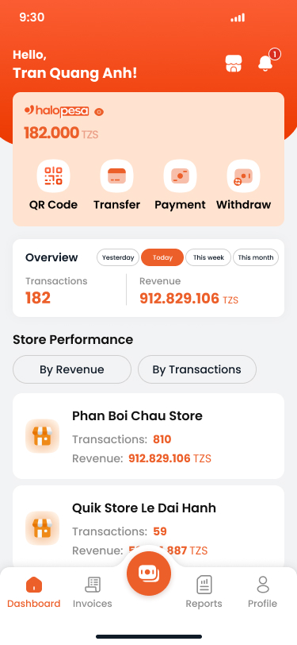

Bán hàng Siêu tốc - Quản trị Thông minh
Chào mừng Ban Giám đốc Natcash Natcom đến với buổi trình diễn thực tế của Quick Sale - giải pháp toàn diện cho điểm bán lẻ giúp số hóa dòng tiền, tối ưu hóa vận hành và bùng nổ doanh số thanh toán số qua ví điện tử Natcash tại Haiti.
- Giao diện Dashboard chủ cửa hàng hiện đại, mang sắc cam-xanh lá của Natcash, cập nhật thời gian thực.
- Tích hợp đa tác vụ bán hàng, sổ quỹ, thanh toán, quản lý thiết bị ngay trên một màn hình di động.
- Mở ứng dụng Quick Sale trên máy demo (dừng ở màn hình Home).
- Chỉ tay vào Dashboard doanh thu hiển thị trực quan cập nhật tự động bằng đồng Gourde (HTG).
3 Nỗi đau lớn của Merchant tại Haiti
Các cửa hàng tạp hóa, quán cà phê nhỏ lẻ tại các thành phố của Haiti đang gặp bế tắc lớn trong vận hành hàng ngày vì thiếu công cụ quản lý bán hàng.
- Thất thoát quỹ tiền mặt Gourde: Thất thoát doanh thu do không ghi chép hoặc ghi nhầm sổ sách các khoản chi nhỏ lẻ hàng ngày.
- Tắc nghẽn giờ cao điểm: Khách xếp hàng dài chờ tính toán, thối tiền hoặc đối chiếu chuyển tiền ví thủ công, gây trải nghiệm xấu.
- Không giữ chân được khách cũ: Thiếu cơ chế khuyến mãi, tích điểm chuyên nghiệp để lôi kéo khách hàng quay lại mua hàng.
Kiến trúc Giải pháp 3-trong-1
Hệ sinh thái Quick Sale kết nối khép kín 3 thành phần cốt lõi để nâng cao trải nghiệm khách hàng và tối ưu doanh thu cho điểm bán.
- POS Di động thông minh: Cho phép nhân viên tạo đơn hàng, áp dụng combo, chiết khấu và thối tiền chỉ trong vài giây.
- Loa Natcash Speaker: Đọc to âm thanh giao dịch tức thì bằng tiếng Creole/Pháp, tạo niềm tin thanh toán QR nhanh gọn.
- Hệ thống quản trị trung tâm: Giúp chủ chuỗi giám sát doanh thu mọi chi nhánh con tại Haiti từ xa.
Onboarding eKYC Siêu tốc trong 5 Phút
Rút ngắn thời gian đưa merchant mới vào hệ thống nhờ luồng tự đăng ký 4 bước tối giản tích hợp kiểm tra tự động phù hợp với pháp lý tại Haiti.
- Phân tách rõ ràng luồng đăng ký cho Merchant cá nhân nhỏ lẻ và Doanh nghiệp vừa.
- Quét và tải tài liệu trực tiếp qua app: Thẻ căn cước quốc gia (CIN/NIF), giấy phép kinh doanh (Patente).
- Liên kết tài khoản ngân hàng lớn tại Haiti (như Sogebank, Unibank, BNC) nhận hoa hồng ngay trong luồng.
- Bấm Tiếp tục trên màn hình mô phỏng eKYC để điền nhanh thông tin Merchant tại Haiti.
- Điền thông tin ID và Bank, click Gửi phê duyệt ở bước 4 để hoàn tất quy trình đăng ký.
Cỗ máy Bán hàng POS & Bán chéo Combo
Giao diện POS thiết kế trực quan giúp tăng giá trị giao dịch trung bình bằng cách gợi ý combo và chiết khấu nhanh chóng.
- Giao diện bán hàng dạng lưới sản phẩm hoặc tìm kiếm thông minh bằng mã vạch/barcode.
- Thiết lập và gợi ý bán chéo các Combo đồ ăn, thức uống có sẵn để gia tăng doanh số.
- Hỗ trợ áp dụng giảm giá trực tiếp theo phần trăm (%) hoặc số tiền cụ thể bằng đồng Gourde (HTG).
- Bấm vào các nút sản phẩm trên máy giả lập để thêm vào giỏ hàng.
- Thêm một Combo sản phẩm ăn sáng, giỏ hàng tự cập nhật và áp dụng chiết khấu 5%.
- Bấm Thanh toán để chuyển sang màn hình tính toán tiền mặt.
Lưu Đơn tạm & Máy tính Thối tiền tự động
Giải phóng quầy thu ngân trong giờ cao điểm và triệt tiêu hoàn toàn thâm hụt tài chính do tính nhầm tiền thừa.
- Lưu đơn tạm (Drafts): Giữ giỏ hàng hiện tại khi khách đổi ý, giải phóng quầy cho khách tiếp theo và khôi phục lại tức thì.
- Tự tính tiền thừa (Cash Change): Chỉ cần nhập số tiền khách đưa bằng Gourde (HTG), hệ thống hiển thị số tiền thừa nhân viên phải thối lại.
- Tại màn hình giả lập, nhấp chọn số tiền khách đưa (ví dụ: 1,000 HTG).
- Nhìn trực quan số tiền thối lại được tính toán tự động hiển thị trên màn hình.
- Nhấp **Hoàn thành** để lưu hóa đơn vào sổ quỹ.
Loa Natcash Speaker - Chống Fake Bill
Thiết bị loa thông báo giao dịch IoT giải quyết triệt để vấn đề niềm tin thanh toán QR tại các quầy thu ngân bận rộn ở Haiti.
- Kết nối đơn giản với loa qua Wi-Fi cửa hàng hoặc lắp SIM dữ liệu 4G Natcom.
- Tự động đọc to số tiền giao dịch thành công bằng tiếng Creole (Haiti) thời gian thực (Real-time voice).
- Quản lý trạng thái trực tuyến của nhiều loa khác nhau trực tiếp trên app.
- Bấm nút **Kiểm thử giao dịch: 1,500 HTG** trên màn hình giả lập.
- Quan sát sóng âm nhấp nháy trên loa mô phỏng và nghe âm thanh đọc tiền bằng tiếng Creole: *"Natcash resevwa mil senksan goud"*.
Quản trị Đa Chi nhánh & Đồng bộ chuỗi
Giúp các chủ cửa hàng mở rộng quy mô kinh doanh không giới hạn, đồng bộ danh mục mặt hàng dễ dàng tại Haiti.
- Phân quyền chuỗi: Tài khoản chủ Admin giám sát toàn bộ thông tin chi tiết và doanh số của các chi nhánh con (Sub-Merchant) tại Haiti (Delmas, Cap-Haïtien).
- Đồng bộ tập trung kho danh mục sản phẩm xuống các máy POS chi nhánh phụ ngay tức thì.
- Giới hạn cấu hình tối đa 20 danh mục sản phẩm để giao diện POS di động luôn mượt mà.
- Nhìn vào danh sách chi nhánh phụ của cửa hàng tại Delmas và Cap-Haïtien trên giả lập.
- Kiểm tra cấu hình danh mục sản phẩm tập trung đang hiển thị.
Sổ quỹ Cash Book & Tích điểm Loyalty
Ghi nhận mọi biến động dòng tiền không thất thoát và xây dựng tệp khách hàng trung thành bền vững.
- Sổ quỹ di động: Tự động ghi chép doanh thu đơn hàng và cho phép log tay các khoản chi tiêu nhỏ lẻ bằng đồng Gourde (HTG).
- Tích điểm Loyalty (Point Setup): Cấu hình quy đổi điểm tích lũy theo giá trị giao dịch (100 HTG = 1 MP) và đổi điểm thành tiền giảm giá trực tiếp.
- Thay đổi giá trị giao dịch trong hộp Loyalty trên máy giả lập để xem số điểm MP tự tính toán.
- Nhập nội dung chi tiêu phát sinh ở ô sổ quỹ để ghi nhận phiếu chi mới vào danh sách.
Kế hoạch Hành động & Đề xuất Thử nghiệm
Quick Sale đã sẵn sàng tích hợp và triển khai thực chiến. Đề xuất kế hoạch thử nghiệm để chứng minh số liệu tăng trưởng cho Natcash.
- Tháng 1 (Pilot): Triển khai thử nghiệm cho 100 Merchant tại Port-au-Prince để thu thập phản hồi và đo lường hiệu quả.
- Tháng 2 (Launch): Ra mắt gói Combo Loa IoT + Ứng dụng Quick Sale trên toàn lãnh thổ Haiti.
- Tương lai (Scale): Cho vay vốn Merchant (Lending) dựa trên lịch sử dòng tiền của sổ quỹ Cash Book.
